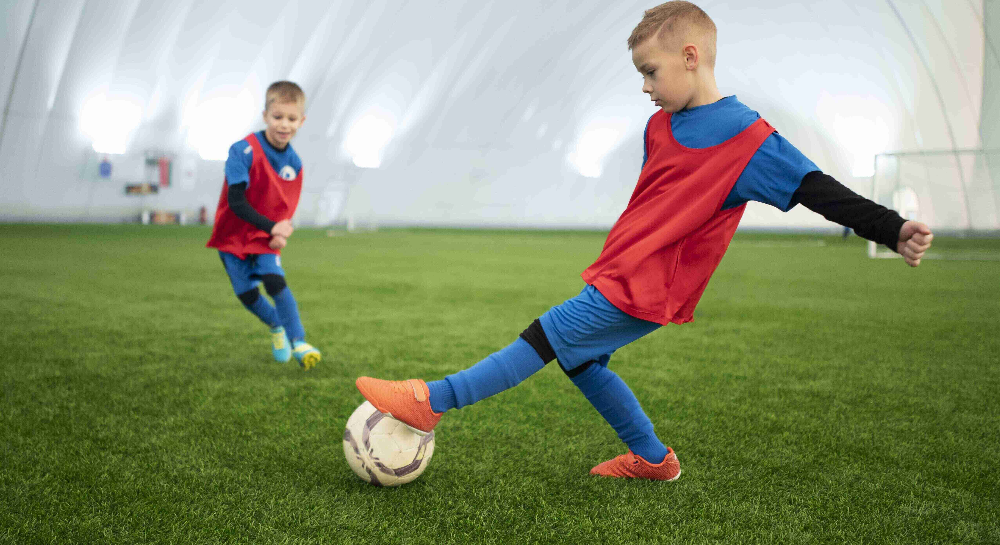
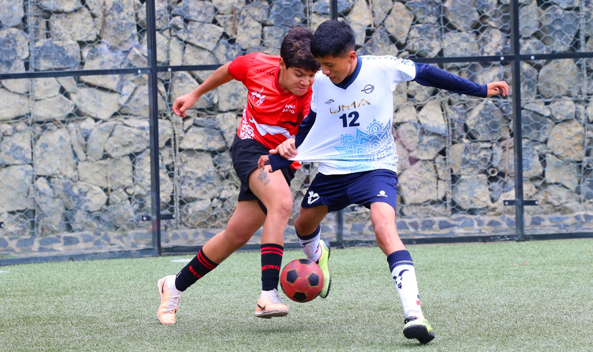
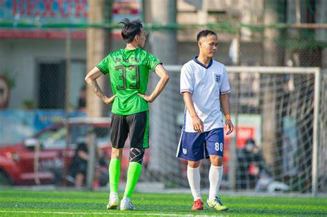

Las categorías para entrenamiento de fútbol se refieren a los diferentes niveles y grupos de edad o competencia, y cada una tiene enfoques específicos para desarrollar habilidades y capacidades apropiadas.
1. Fútbol Infantil (4-12 años)
Metodología: El enfoque principal es el aprendizaje a través del juego. Se utilizan juegos modificados, circuitos de habilidades y actividades lúdicas que simulan situaciones de partido de forma simplificada. La técnica individual se introduce de manera intuitiva, centrándose en el control del balón, el pase y el tiro, siempre en un contexto divertido y sin presiones.
Objetivos Específicos:
- Desarrollo Psicomotor: Mejorar la coordinación general, el equilibrio, la agilidad y la conciencia espacial.
- Habilidades Motrices Básicas: Caminar, correr, saltar, lanzar, golpear.
- Primeros Contactos con el Balón: Familiarización con el balón, control básico.
- Valores Deportivos: Respeto, juego limpio, trabajo en equipo (a nivel muy básico).
- Disfrute y Motivación: Fomentar el amor por el deporte y la actividad física regular.
Periodización: En esta etapa, la periodización es mínima y se centra más en la variedad de estímulos y la progresión de la complejidad de los juegos y ejercicios. No se habla de macrociclos o mesociclos estructurados, sino de una progresión natural de las actividades a lo largo de la temporada.
Nutrición y Psicología: Se enfoca en hábitos alimenticios saludables y básicos, asegurando una hidratación adecuada. Psicológicamente, se busca reforzar la autoestima, manejar la frustración inicial y promover la participación activa de todos los niños, independientemente de su nivel de habilidad.

2. Fútbol Juvenil (13-18 años)
Metodología: Se transita hacia un entrenamiento más estructurado y analítico, pero sin perder el componente lúdico. Se introducen conceptos tácticos más complejos, tanto individuales como colectivos. La técnica se refina con ejercicios específicos y repeticiones. Se comienza a trabajar la preparación física de forma más específica, introduciendo conceptos de fuerza, resistencia y velocidad adaptados a la edad y al desarrollo biológico.
Objetivos Específicos:
- Consolidación Técnica: Perfeccionamiento de todos los gestos técnicos (conducción, pase, recepción, regate, tiro, etc.).
- Comprensión Táctica: Inicio en la lectura del juego, posicionamiento, ocupación de espacios, transiciones defensa-ataque y ataque-defensa.
- Desarrollo Físico: Mejora de las capacidades condicionales (velocidad, resistencia, fuerza, flexibilidad) acordes a las demandas del fútbol.
- Autonomía y Responsabilidad: Fomentar la toma de decisiones en el campo y la autogestión del entrenamiento.
- Adaptación a Roles: Comenzar a entender las exigencias de diferentes posiciones.
Periodización: Se introduce una periodización más formal, con la división en macrociclos (temporada), mesociclos (bloques de entrenamiento de varias semanas) y microciclos (semanas de entrenamiento). El objetivo es planificar las cargas de entrenamiento para alcanzar el máximo rendimiento en momentos clave de la competición. Se tienen en cuenta las fases de desarrollo físico y madurativo de los adolescentes.
Nutrición y Psicología: La nutrición se vuelve más específica, enfocándose en la alimentación pre y post-entrenamiento/partido, la ingesta de macronutrientes y micronutrientes esenciales. Psicológicamente, se trabaja en la gestión de la presión, el manejo de la frustración ante el error, el desarrollo de la concentración y la motivación intrínseca para el alto rendimiento.

3. Fútbol Amateur o de Aficionados (Adultos)
Metodología: El entrenamiento se adapta a las disponibilidades de tiempo de los jugadores y a sus objetivos personales, que suelen ser el mantenimiento de la forma física, la mejora técnica y la participación recreativa o competitiva a nivel local. Las sesiones suelen ser menos intensivas que en el fútbol profesional, pero buscan ser eficientes. Se combinan ejercicios técnicos, tácticos básicos y preparación física general.
Objetivos Específicos:
- Mantenimiento Físico: Conservar o mejorar la condición física general.
- Mejora Técnica y Táctica: Refinar habilidades y comprender esquemas de juego básicos para la competición amateur.
- Cohesión Grupal: Fortalecer el espíritu de equipo y la camaradería.
- Disfrute y Salud: Mantenerse activo y saludable a través del deporte.
Periodización: La periodización puede ser flexible y adaptada a la liga o competición en la que participen. Puede incluir fases de preparación general, específica y de competición, pero con cargas y volúmenes menores que en el alto rendimiento. La recuperación es un factor importante para evitar lesiones.
Nutrición y Psicología: Se promueven hábitos alimenticios saludables para el día a día y para optimizar el rendimiento deportivo, pero sin el nivel de control o detalle del profesionalismo. Psicológicamente, se enfoca en el disfrute del juego, la gestión del estrés de la competición y la integración social dentro del equipo.

4. Fútbol Profesional y Semi-profesional (Adultos de Alto Rendimiento)
Metodología: El entrenamiento es altamente científico y especializado. Se basa en el alto rendimiento y busca la optimización de todas las capacidades del deportista. Se utilizan análisis de datos y videoanálisis para evaluar el rendimiento individual y colectivo. El entrenamiento es multidisciplinar, integrando preparación física, técnica, táctica, psicológica y nutricional de manera coordinada.
Objetivos Específicos:
- Máximo Rendimiento Deportivo: Alcanzar el pico de forma física, técnica y mental para competir al más alto nivel.
- Dominio Táctico Avanzado: Comprensión profunda de sistemas de juego, estrategias, adaptaciones y contraestrategias.
- Optimización Física: Desarrollo y mantenimiento de capacidades condicionales al límite, con énfasis en la potencia, la velocidad de reacción y la resistencia específica.
- Prevención de Lesiones: Trabajo exhaustivo de readaptación, movilidad, fuerza específica y control motor.
- Recuperación Eficiente: Implementación de estrategias avanzadas para la recuperación post-ejercicio y post-partido.
Periodización: La periodización es compleja y detallada, dividida en macrociclos (anuales, olímpicos), mesociclos (precompetitivo, competitivo, transitorio) y microciclos (semanales, con variaciones según la proximidad del partido). Se planifican las cargas (volumen, intensidad, frecuencia) y las recuperaciones de forma milimétrica para llegar en óptimas condiciones a cada partido y competición. Se consideran las distintas fases de la temporada y las necesidades individuales de cada jugador.
Nutrición y Psicología: La nutrición es personalizada y monitorizada por especialistas, con planes detallados para cada momento (entrenamiento, competición, recuperación, viajes). Se abordan suplementos, horarios de comidas y composición corporal. La psicología deportiva es fundamental, trabajando aspectos como la resiliencia, el liderazgo, la comunicación, la gestión de la presión extrema, la concentración sostenida y la motivación a largo plazo.
5. Categorías por Posición (Opcional pero Fundamental)
Independientemente de la edad o el nivel, el entrenamiento puede (y debe) dividirse por posiciones para abordar las demandas específicas de cada rol en el campo:
- Porteros: Entrenamiento de reflejos, agilidad, saltos, blocajes, salidas, juego con los pies, comunicación y liderazgo defensivo.
- Defensas: Entrenamiento de marcaje, anticipación, duelos individuales, juego aéreo, salida de balón, coberturas y posicionamiento táctico.
- Mediocampistas: Entrenamiento de visión de juego, pase (corto y largo), control de balón en espacios reducidos, conducción, recuperación de balón, transiciones y resistencia.
- Delanteros: Entrenamiento de definición, desmarque, remate de cabeza, juego de espaldas, conducción hacia portería, desequilibrio individual y movimientos sin balón.
Cada una de estas divisiones requiere ejercicios y metodologías adaptadas, complementando el entrenamiento general del equipo. La tecnología (GPS, sensores de rendimiento, plataformas de análisis) juega un papel cada vez más importante en la optimización de estos entrenamientos especializados.
Consideraciones Adicionales para Ampliar Contenido:
- Evolución del Entrenamiento: Cómo han cambiado las metodologías a lo largo del tiempo (del "entrenamiento tradicional" al "entrenamiento basado en el juego" o "entrenamiento integrado").
- Roles del Cuerpo Técnico: Detallar las funciones del entrenador principal, preparador físico, entrenador de porteros, analista de video, fisioterapeuta, nutricionista, psicólogo deportivo.
- Uso de la Tecnología: Explicar cómo herramientas como el GPS, los sensores biométricos, el videoanálisis y las plataformas de gestión de datos se integran en el entrenamiento moderno.
- Principios del Entrenamiento Deportivo: Explicar principios como la especificidad, la progresión, la sobrecarga, la variabilidad y la individualización.
- Fases de la Temporada: Describir con más detalle los objetivos y características de la pretemporada, la temporada competitiva y el periodo de transición o descanso.
- Aspectos Psicológicos Profundos: Ahondar en la cohesión de grupo, la inteligencia emocional, la resiliencia ante fracasos, la gestión de la fama o la presión mediática.
- Nutrición Avanzada: Detallar la suplementación deportiva, la crononutrición, la hidratación estratégica y la adaptación a dietas específicas.
|